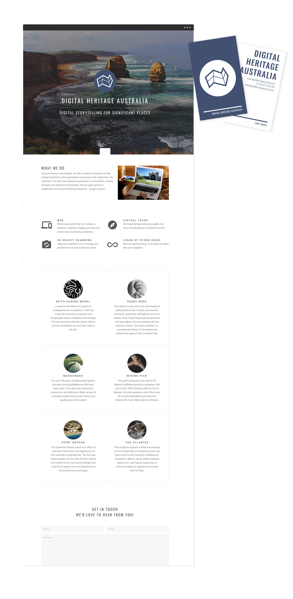
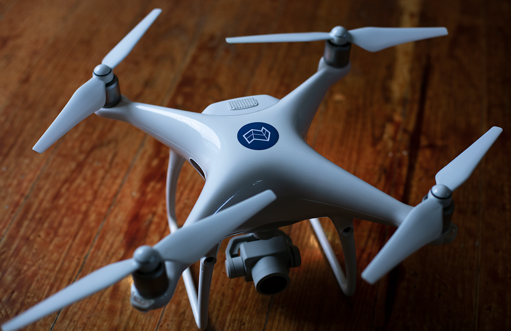
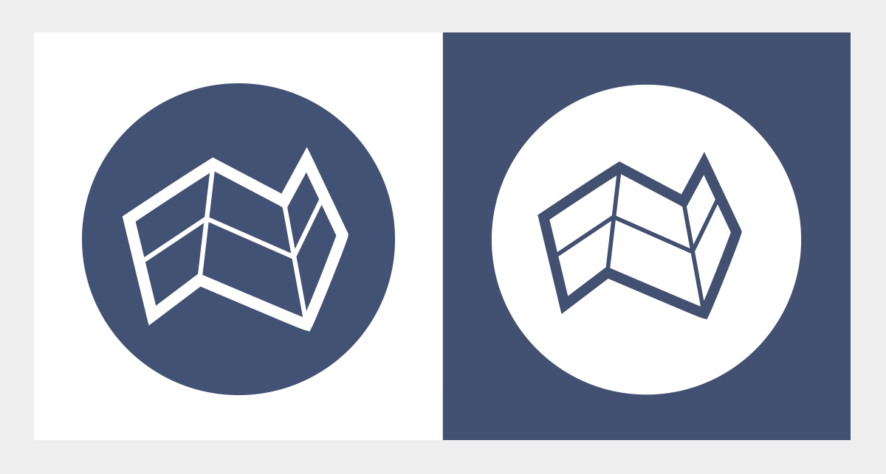
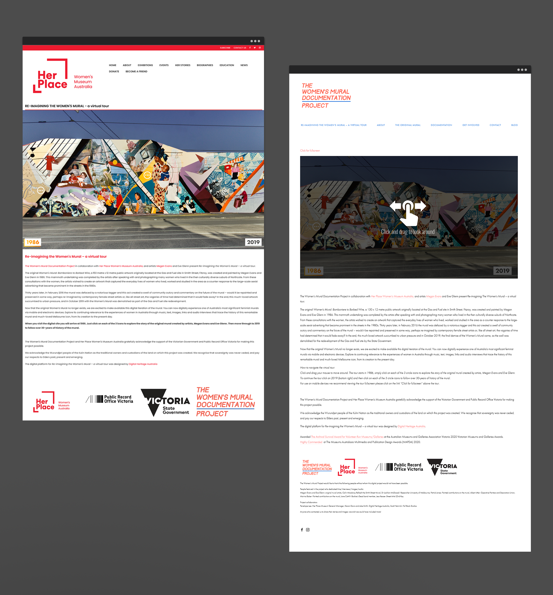
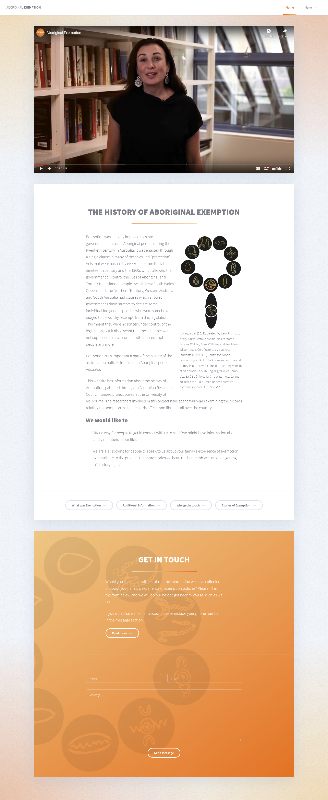

Hi I'm Jake Smith
Front end developer, interface designer and all round tinkerer.
Im based in Melbourne, Australia and have over 10 years experience in design and web development.
Five years ago I co-founded Digital Heritage Australia, a two-person team that specialises in combining traditional heritage interpretation with new technologies to produce digital products for organisations in the heritage and cultural sectors. We create things like virtual tours, short documentaries, VR experiences and websites.
Select Projects
Digital Heritage Australia
Design, Devlopment, Print, Branding & Film
Digital Heritage Australia
In 2015 I co-founded Digital Heritage Australia, I am
the principal designer and web developer and have
been responsible for the concept creation and delivery
of a variety of projects. I’ve been fortunate enough to
work for clients such as Melbourne Water, The National
Trust, The University of Melbourne, Parks Victoria, The
NFSA, and Open House Melbourne.



La Mama
Design, Devlopment, Branding & Film
La Mama
As part of an ongoing series of projects with The
University of Melbourne, La Mama provided me an
exciting opportunity to design a media-rich
website using archival material, video, and
responsive web technologies to present a curated
history of the theatre.

Captain Mills Cottage
Design, Devlopment, Photography & Film
The Digital Woman’s Mural
Design, Devlopment & Photography
The Digital Woman’s Mural: A virtual Tour
In collaboration with The Women’s Mural
Documentation Project and Her Place Women’s
Museum Australia, This virtual mural pays homage
to the history of the now-demolished Women's
Mural: Bomboniere to Barbed Wire. By stitching
archival photographs together I was able to
digitally restore the mural and place it back onto
the streetscape. The project combines panoramic
photography archival images and audio interviews.

WWII at Home
Design, Devlopment, Photography, Branding & Film
WWII at Home: Response, Reflection & Rejuvenation
In collaboration with The National Trust of Australia
and Open House Melbourne, I produced a website
that illustrates the themes of response, reflection,
and rejuvenation that emerged from developments
during World War II. Using a combination of
research, video production, photography,
development, drone footage, and archival material I
was able to provide a variety of imagery to
represent the project’s themes and delivered a
product that exceeded expectations.

The History of Aboriginal Exemption
Design, Devlopment, Branding & Film
The History of Aboriginal Exemption
As part of an ARC research grant, I worked in collaboration with a with Historian Katherine Ellinghaus from Melbourne Universty to develop a website dedicated to Katherine’s research on the policies of exemption imposed on some Aboriginal people during the twentieth century.
The website offers a personalised way for members of the public to learn about the history of exemption and Katherine's research, while also providing a means for members of the public to contact Katherine if they are interested in being involved in her important research.
